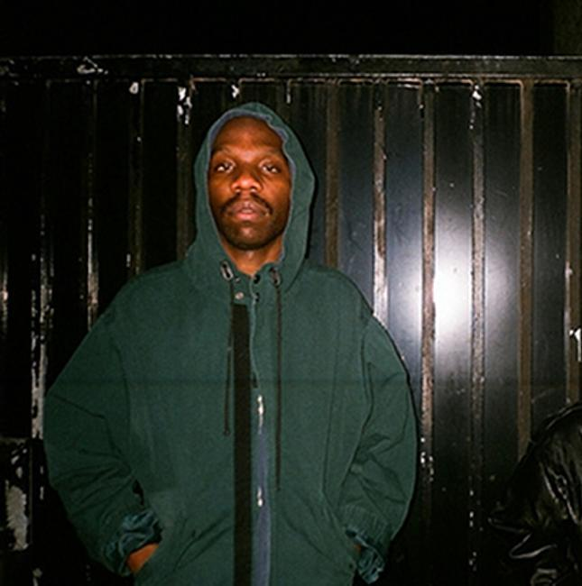

|  |
Roy Nnawuchi, better known by his pseudonym Dean Blunt, is a British musician, record producer, singer-songwriter, writer, director, and artist. He is best known for both his work as part of avant-garde group Hype Williams (featuring himself and Inga Copeland) and more recently, the groups Babyfather and Blue Iverson. Blunt was also the founder of London rock band Graffiti Island.[1][6] He has been described as "a prolific, category-rejecting artist"[1] and "an art-pop provocateur. Blunt embarked his solo career in 2011, releasing a set of albums as well as several EPs and singles. His full-length studio albums, The Narcissist II (2012), The Redeemer (2013), and Black Metal (2014), received attention and praise from various music publications.[1][7][8] BBF Hosted By DJ Escrow, his first album as Babyfather, was named the best album of 2016 by Tiny Mix Tapes and Resident Advisor. In October 2017, Blunt also debuted Inna, an opera directed by himself with music from Mica Levi, at the Institute of Contemporary Arts in London.[9] Blunt is also known for his playfulness and obfuscation. In 2015, he sent his bodyguard to accept his Philip Hall Radar Award at the NME Awards.[10] In 2016, he listed a toy Foxtons estate agents Mini Cooper filled with marijuana on eBay.[11] At a New York concert, in March 2016, media guests were asked to check in under aliases that they had received with their ticket confirmations. |
The thing about listening to Dean Blunt is that I rarely pay attention to the words. Maybe it’s because I’ve been programmed over the course of however many albums and years with his old group Hype Williams, where obscurity with the odd provocation via an album title, a song name, or a cloudy reference to a marginalised cultural trope, is what one comes to expect with his music. A lot of the time that means missing the point, where Blunt's third 'official' solo album, 'Black Metal' – featuring 13 charming songs that only occasionally dip into the misty and malfunctioning chaos of his Hype Williams heyday – seems to fade out with the lonely city-glow of album-closer Grade's film noir saxophone outro.
The latest from the one-time member of shadowy experimental outfit Hype Williams veers in the direction of proper song and sounds heartbroken, boasting sad horn solos, sweeping strings, and harp flurries, along with ominous clock chimes and distraught voicemail messages.The Redeemer is his break-up album, a relatively straightforward affair after numerous releases that seemed to reveal as little about him as possible-- or maybe they revealed everything. His prior work, both on his own and with sometime partner Inga Copeland, varied wildly in quality, finally reaching a dead end with last year's The Narcissist II, a half-assed tribute to half-assedness.There's a strong sense of something.
"I remember my man said, 'Don't waste time doing a crime if it's already been done.' Do you know how real that is?" muses DJ Escrow partway through Babyfather's debut album. "That's why I'm here, you know? Not just to play tunes but to show man certain things." He seems to be warming to his instructive theme, but then he loses interest. "Ah, I'm chatting too much shit, just play that fucking tune." It's not clear who DJ Escrow is—a friend of Dean Blunt's or a persona, an unknown London musician or a parody of one—but his plucky presence is at the centre of Babyfather. BBF, which follows a string of online mixtapes from the project, is presented like a pirate radio show...